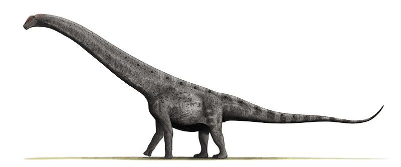
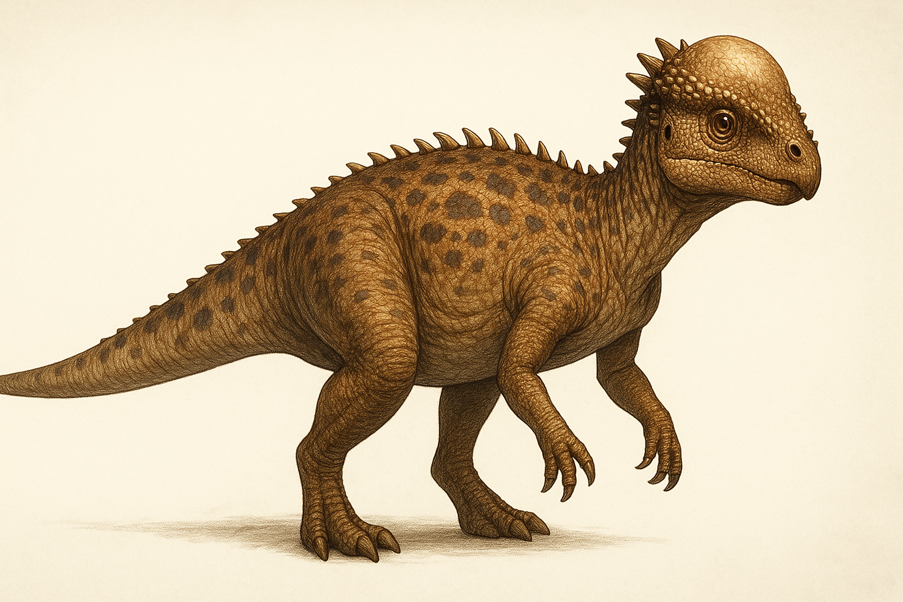

Diplodocus

El Diplodocus fue un dinosaurio herbívoro que vivió durante el período Jurásico, hace aproximadamente 154-152 millones de años. Pertenecía al grupo de los saurópodos y se caracterizaba por su cuerpo largo y esbelto, con un cuello y una cola extremadamente largos. Podía alcanzar hasta 30 metros de longitud, lo que lo convierte en uno de los dinosaurios más largos conocidos.
Se cree que su cuello largo le permitía alcanzar grandes cantidades de vegetación sin moverse demasiado, mientras que su cola en forma de látigo podía haber servido como defensa contra depredadores. Sus patas eran relativamente cortas en comparación con otros saurópodos, lo que le daba una postura más horizontal.
Fósiles de Diplodocus se han encontrado en Norteamérica, especialmente en la Formación Morrison, y es uno de los dinosaurios más representados en museos debido a su impresionante tamaño y estructura.
Argentinosaurus

El Argentinosaurus fue un dinosaurio herbívoro que vivió durante el período Cretácico, hace aproximadamente 96-92 millones de años, en lo que hoy es Argentina. Pertenecía al grupo de los titanosaurios y es considerado uno de los dinosaurios más grandes que jamás existieron.
Se estima que alcanzaba entre 30 y 40 metros de longitud y pesaba alrededor de 50-100 toneladas. Su enorme tamaño lo convertía en un animal difícil de atacar, aunque pudo haber sido presa de grandes terópodos como el Giganotosaurus.
Sus fósiles fueron descubiertos en la provincia de Neuquén, Argentina, en la década de 1990, y aunque no se ha encontrado un esqueleto completo, los restos indican que tenía un cuerpo robusto, patas gruesas y un cuello largo que le permitía alimentarse de la vegetación más alta.
Pachycephalosaurus

Este dinosaurio herbívoro (o posiblemente omnívoro) vivió a finales del período Cretácico, hace aproximadamente 70-66 millones de años, en lo que hoy es Norteamérica.
Se caracterizaba por su cráneo grueso y abovedado, que podía medir hasta 25 cm de grosor. Se cree que lo usaba en combates entre individuos de su misma especie, posiblemente chocando cabezas como hacen algunos animales modernos.
El Pachycephalosaurus medía unos 4-5 metros de largo y pesaba alrededor de 400-500 kg. Era un dinosaurio bípedo, con patas traseras largas y fuertes, lo que sugiere que podía moverse rápidamente.
Sus fósiles se han encontrado en lugares como Montana, Dakota del Sur y Wyoming, y es uno de los pachycephalosáuridos más conocidos.